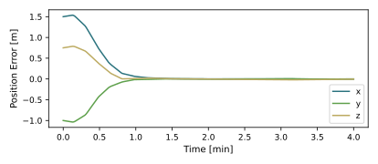
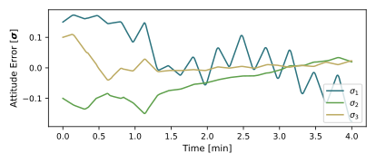

scenarioThrArmControl
It’s recommended to review the following scenario(s) first (and any recommended scenario(s) that they may have):
examples/mujoco/scenarioReactionWheel.pyexamples/BskSim/scenario_BasicOrbit.py
Overview
This script demonstrates how to simulate the control of a 6-DOF spacecraft with two attached 4-DOF thruster arms using the MuJoCo physics engine within the BSK_Sim architecture.
The multi-body systems is created by importing the MuJoCo XML file sat_w_thruster_arms.xml
which defines the spacecraft hub and two attached 4-DOF thruster arms. It consists of a central hub
with two arms each consisting of 4 hinged joints, 2 rigid arm segments, and a thruster at the end.
MuJoCo single-input actuators are used for each of the spacecraft’s thrusters hinged joints, and to apply
an additional torque capability direct to the spacecraft hub.
The script is found in the folder basilisk/examples/mujoco and executed by using:
python3 scenarioThrArmControl.py
Two simulation processes are created: one which contains dynamics modules, and one that contains the Flight Software (FSW) modules. The Dynamics process contains a single task with the modules:
MJScene: the MuJoCo dynamics module that simulates the multi-body system defined in the XML fileMJSystemCoM: extracts the center of mass position and velocity of the multi-body system from the MuJoCo sceneMJSystemMassMatrix: extracts the mass matrix of the multi-body system from the MuJoCo sceneMJJointReactionForces: extracts the internal reaction forces and torques of the multi-body system from the MuJoCo scene
The FSW process contains three tasks: the outer loop control task, the joint motion task, and the thruster firing task. The modules for the outer loop control task include:
inertial3D: generates and inertial reference attitudeattError: computes the attitude error between the current and reference attitudemrpFeedback: computes the attitude control torqueinertialCartFeedback: computes the positional control forcejointThrAllocation: determines the joint angles and thruster forces needed to achieve the desired control torque and forcethrFiringRound: determines thruster firing time based on the thruster forces and a specified minimum impulse bit
The modules for the joint motion task include:
hingedJointArrayMotor: determines the motor commands for the hinged joints of the thruster armsjointMotionCompensator: determines the compensation torques to apply at the spacecraft hub to counteract the reaction torques from moving the thruster arms
The modules for the thruster firing task include:
thrOnTimeToForce: converts on time to thruster forcethrJointCompensation: determines the motor commands to hold hinged joints static during thruster firing
The different tasks are enabled and disabled using three events: joint motion, thruster firing, and coasting. The condition to trigger each event and action it performs are as follows:
Joint Motion Event:
Condition: New desired joint angles are received from the outer control loop
Action: enables the joint motion task and move the arms to their desired positions
Thruster Firing Event:
Condition: New desired thruster forces are received from the outer control loop and the joints have reached their desired positions
Action: enables the thruster firing task and fire the thrusters to achieve the desired forces
Coasting Event:
Condition: The thrusters have finished firing and there is time before the next outer loop update
Action: set commands for all actuators to zero and allow the spacecraft to coast until the next control update
Illustration of Simulation Results
showPlots = True


- scenarioThrArmControl.run(showPlots: bool = False, timeStep: float = 0.01, runTime: float = 320.0)[source]
The scenarios can be run with the following setups parameters:
- Parameters:
showPlots (bool) – Determines if the script should display plots